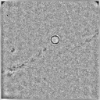
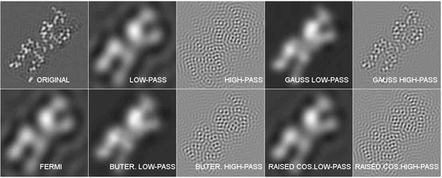
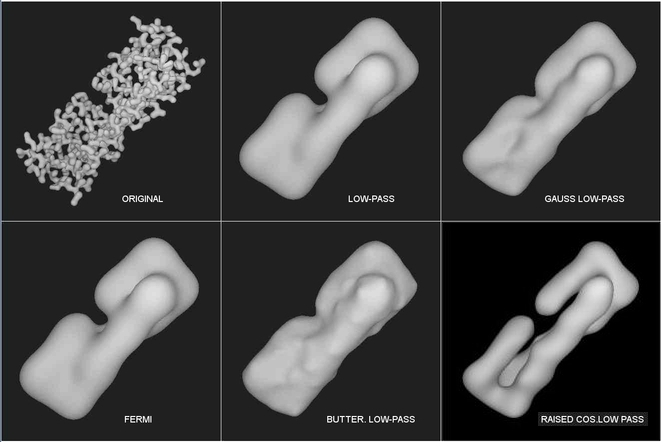

| .OPERATION: | FQ NP | ; Filter - Quick Fourier, High, Low Pass, etc, No Padding |
| .INPUT FILE: | sav_pp | ; Image (input) |
| .OUTPUT FILE: | fqnp | ; Filtered image (output) |
| .FILTER TYPE (1-10): | 2 | ; Filter type |
| .FILTER RADIUS (IN FREQUENCY OR PIXEL UNITS): | 10 | ; Radius |
| INPUT | OUTPUT |
|---|---|
|  |
| sav_pp | fqnp |
| LOW-PASS | Radius: | 0.09 | ||
| HIGH-PASS | Radius: | 0.45 | ||
| GAUSSIAN LOW-PASS | Radius: | 0.06 | ||
| GAUSSIAN HIGH-PASS | Radius: | 0.45 | ||
| FERMI | Radius: | 0.09 | ||
| BUTTERWORTH LOW-PASS | Lower freq.: | 0.06 | Upper freq.: | 0.12 |
| BUTTERWORTH HIGH-PASS | Lower freq.: | 0.4 | Upper freq.: | 0.5 |
| RAISED COSINE LOW-PASS | Lower freq.: | 0.06 | Upper freq.: | 0.12 |
| RAISED COSINE HIGH-PASS | Lower freq.: | 0.4 | Upper freq.: | 0.5 |
|  |
|  |